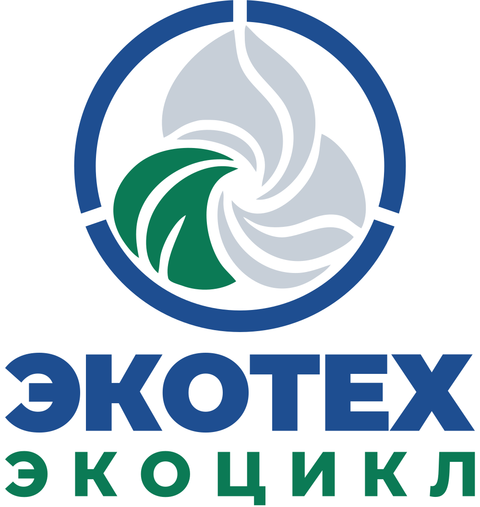
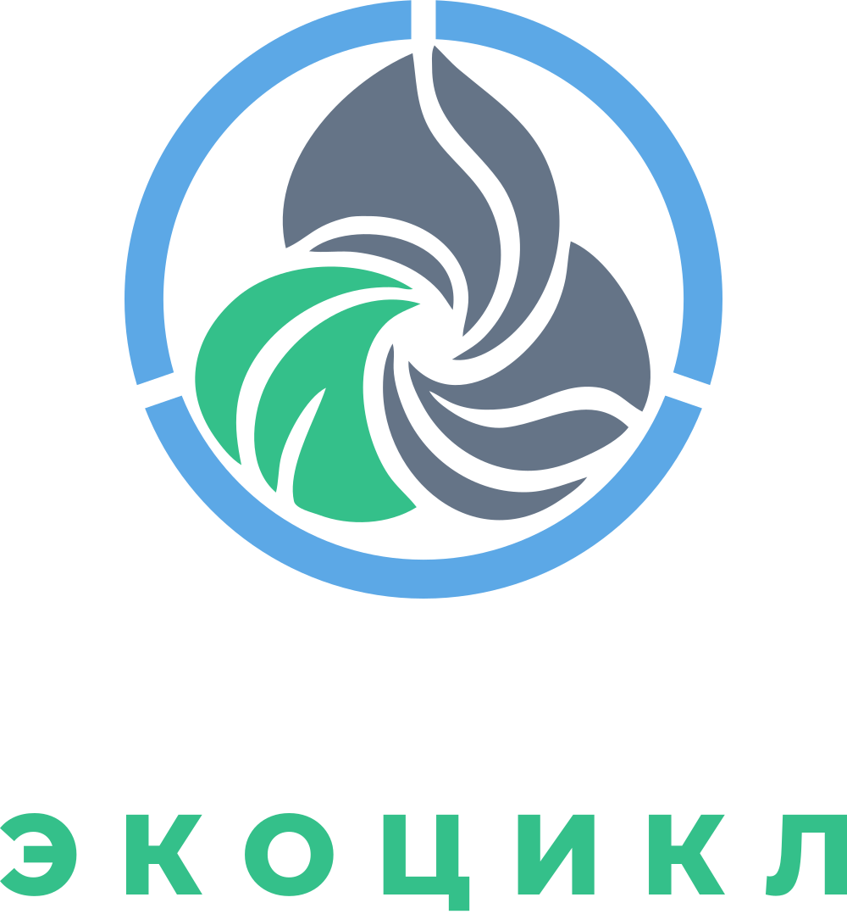

Экоцикл · проектная концепция
Водоподготовка и тепло из отходов — в единой системе объекта
Экоцикл объединяет Экофильтр и Экомодуль. Это проектная концепция: замкнут только контур теплоносителя; вода, сырьё, остаток и газы пересекают границу системы и учитываются отдельно.


Схема
Что поступает в систему, что выходит и где ведётся учёт
Что поступает на объект
Исходная водаскважина, линия, технология
Отходы площадкипригодность подтверждена анализом
Электроэнергиядля работы оборудования
Приборы на входе и выходе, журнал, протоколы
Совместная система «Экоцикл» — на стадии концепции
Результат
Вода после обработкиЭкофильтр, протоколы лаборатории получены 18.06.2026
Полезное теплоЭкомодуль, предстоит измерить при испытаниях
Данные измерений
Промывочная вода, зольный остаток, отходящие газыучитываются отдельно
Функциональная схема. Частичный возврат воды и подача тепла на водоподготовку — целевые решения.
Границы системы
Замкнутым называется только контур теплоносителя
Остальные потоки показаны отдельно.
| Состояние | Потоки |
|---|---|
| Поступает извне | Отходы, исходная вода, электроэнергия |
| Результат | Тепло потребителю, обработанная вода |
| Учитывается отдельно | Зольный остаток, промывочная вода, отходящие газы — состав газов подтверждается протоколом аккредитованной лаборатории |
| Возврат — план | Тепло на нужды водоподготовки |
| Частичный возврат — цель | Очищенная вода на подпитку системы |
| Замкнуто | Контур теплоносителя |
| Система учёта | Измерения и управление по каждому потоку |
Главное
Экоцикл замыкает не все потоки: извне поступают вода, сырьё и электроэнергия; наружу выходят обработанная вода, тепло, остаток и газы. Все эти потоки учитываются.
Показатели
Целевые показатели системы
| Показатель | Значение | Единица | Объект | Дата | Источник | Статус |
|---|---|---|---|---|---|---|
| Контуры, замкнутые полностьюОстальные потоки — открытые или частично возвратные. | 1 | контур (теплоноситель) | Экоцикл (концепция) | 09.2026 | проектная концепция «Экоцикла» | ЦЕЛЕВОЕ |
| Результаты работы системы: тепло и вода | 2 | вида | Экоцикл (концепция) | 09.2026 | проектная концепция «Экоцикла» | ЦЕЛЕВОЕ |
| Доля возврата очищенной воды в контурЗначение определяется проектом под объект и измерениями. | — | % | Экоцикл (концепция) | 09.2026 | проектирование | ТРЕБУЕТ ПРОВЕРКИ |
Данные Экоцикла складываются из результатов Экофильтра и Экомодуля, подтверждённых по отдельности. Баланс по воде, теплу и сырью публикуется после измерений на объектах.
Готовность
Проектная концепция
- 01Концепция
сейчас - 02Исследования и разработка
- 03Опытный образец
- 04Испытания
- 05Испытания на объекте
- 06Подтверждение в промышленных условиях
- 07Внедрение
- 08Расширение применения
- Стадия
- Концепция
- На чём основана
- Проектная концепция
- Дата
- 09.2026
- Следующий этап
- Подтвердить Экофильтр и Экомодуль по отдельности; выбрать объект
Экоцикл начинается с объекта
Где есть вода для обработки, пригодные отходы и потребность в тепле.